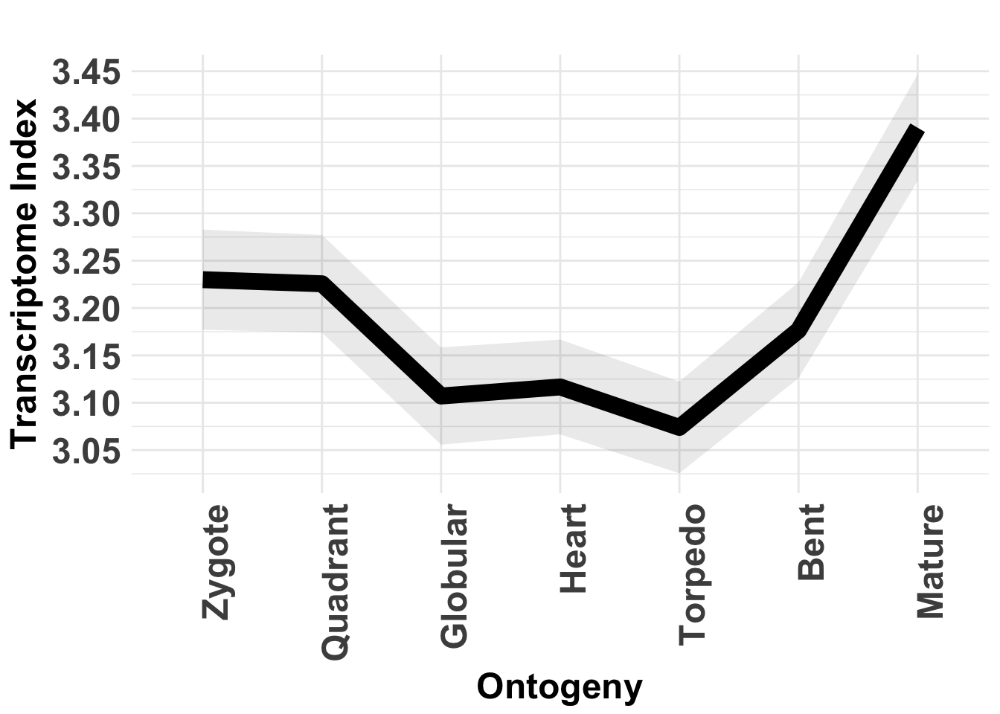
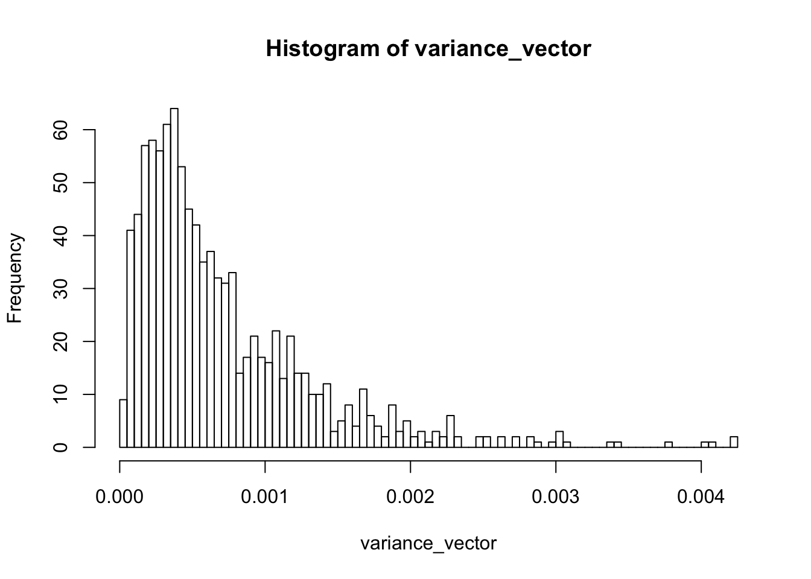
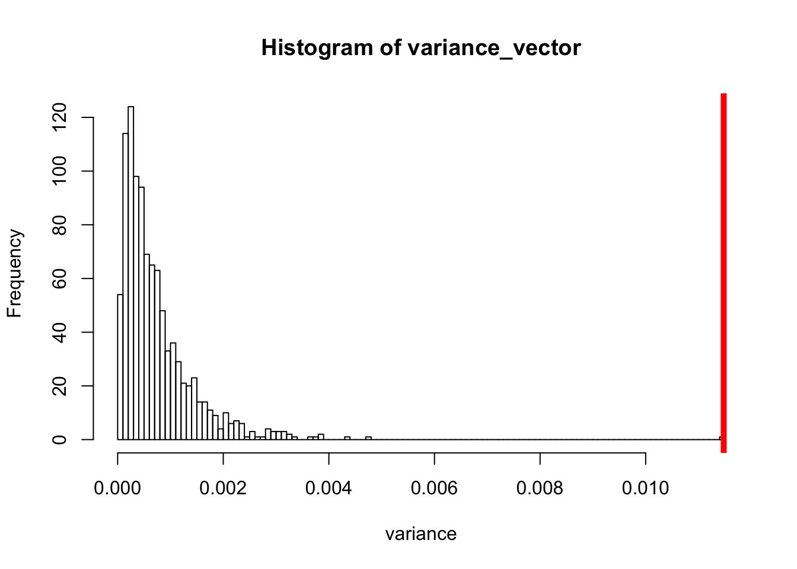
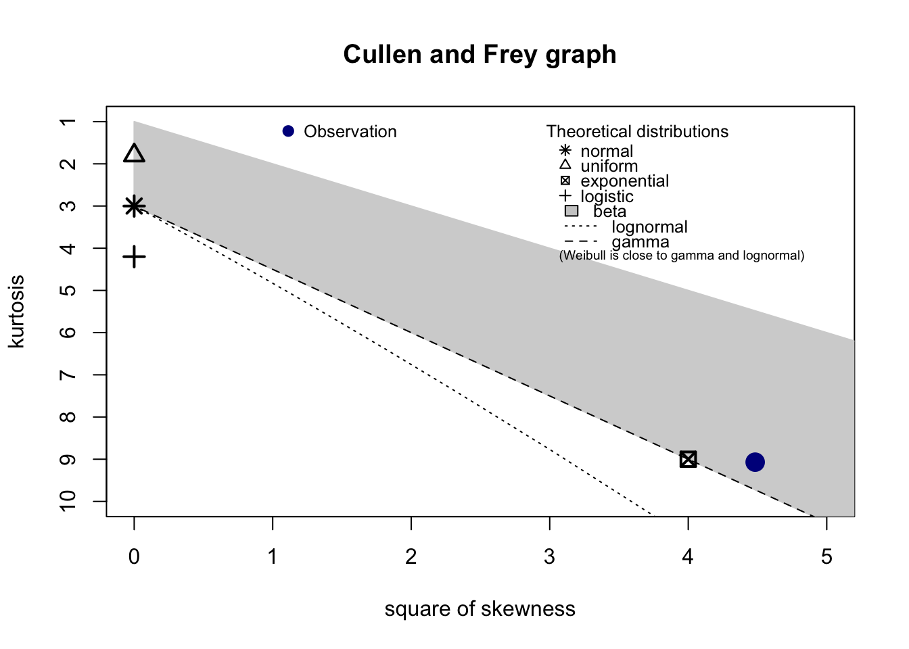
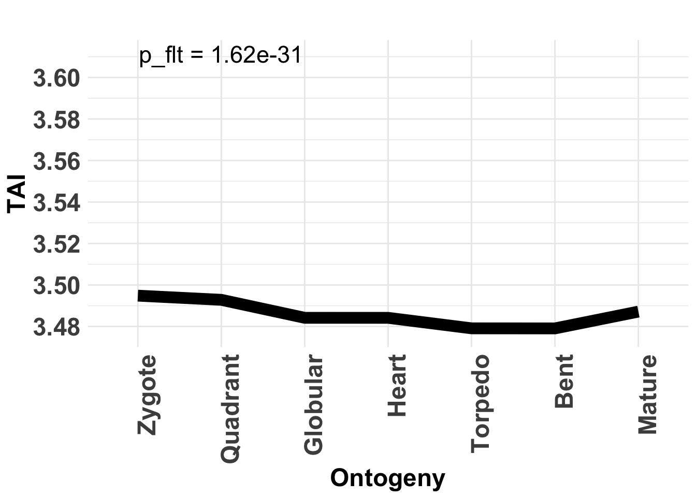
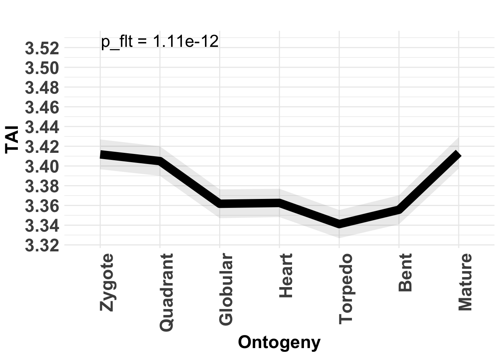
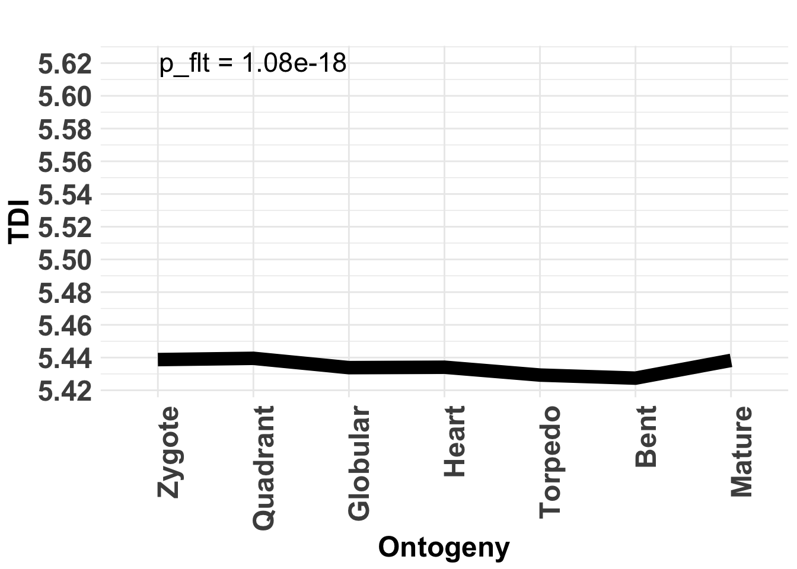
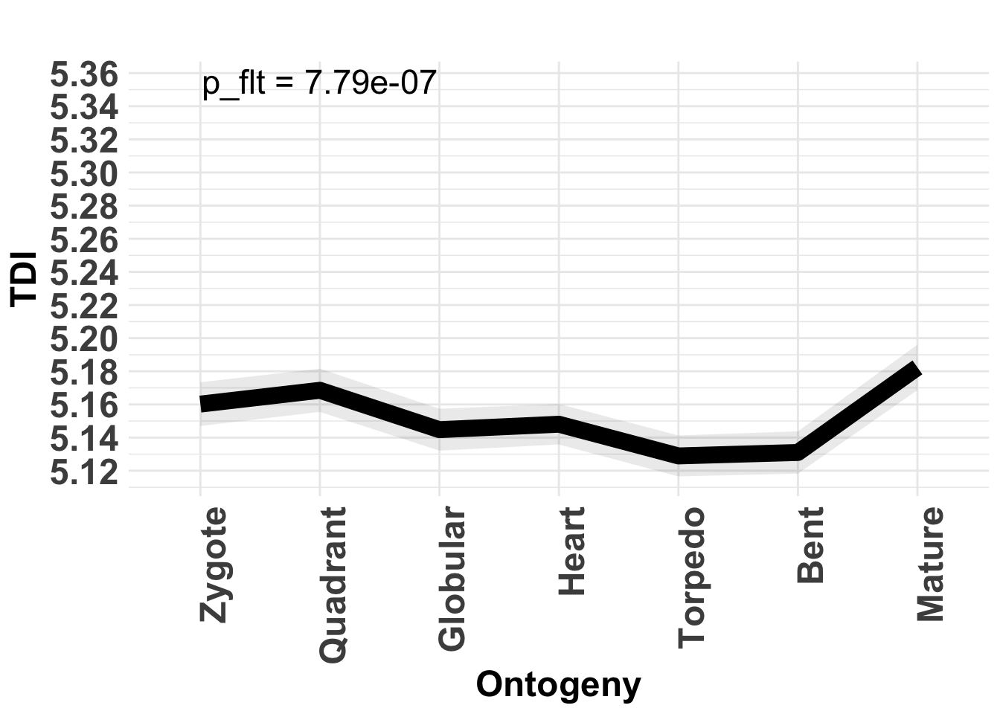

Intermediate Phylotranscriptomics Analyses
2021-02-23
Source:vignettes/Intermediate.Rmd
Intermediate.RmdIn the Introduction vignette users learned how to perform the most fundamental computations and visualizations for phylotranscriptomics analyses using the myTAI package.
This Intermediate vignette introduces more detailed analyses and more specialized techniques to investigate the observed phylotranscriptomics patterns (TAI, TDI, RE, etc.) and introduces the statistical framework to quantify the significance of observed phenomena.
- 1. Details: Flat Line Test
- 2. Details: Reductive Hourglass Test
- 3. Details: Reductive Early Conservation Test
- 4. Details: Reverse Hourglass Test
- 5. Data Transformation for log(TAI) and sqrt(TAI) patterns
Investigating the Statistical Significance of Phylotranscriptomic Patterns
Three methods have been proposed to quantify the statistical significance of the observed phylotranscriptomics patterns (Quint et al., 2012; Drost et al., 2015).
- Flat Line Test
- Reductive Hourglass Test
- Reductive Early Conservation Test
Here, we will build the test statistic of each test step by step so that future modifications or new test statistics can be built upon the existing methods implemented in the myTAI package.
Flat Line Test
The Flat Line Test is a permutation test quantifying the statistical significance of an observed phylotranscriptomic pattern. The goal is to detect any evolutionary signal within a developmental time course that significantly deviates from a flat line.
To build the test statistic we start with a standard PhyloExpressionSet. The myTAI package provides an example PhyloExpressionSet named PhyloExpressionSetExample:
library(myTAI)
# load an example PhyloExpressionSet stored in the myTAI package
data(PhyloExpressionSetExample)
# look at the standardized data set format
head(PhyloExpressionSetExample, 3) Phylostratum GeneID Zygote Quadrant Globular Heart Torpedo Bent Mature
1 1 at1g01040.2 2173.635 1911.200 1152.555 1291.4224 1000.253 962.9772 1696.4274
2 1 at1g01050.1 1501.014 1817.309 1665.309 1564.7612 1496.321 1114.6435 1071.6555
3 1 at1g01070.1 1212.793 1233.002 939.200 929.6195 864.218 877.2060 894.8189Users will observe that the first column of the PhyloExpressionSetExample stores the Phylostratum assignments of the corresponding genes. The permutation test is based on random sampling of the Phylostratum assignment of genes. The underlying assumption is that the TAI profile of correctly assigned Phylostrata is significantly deviating from TAI profiles based on randomly assigned Phylostrata.
# TAI profile of correctly assigned Phylostrata
TAI(PhyloExpressionSetExample) Zygote Quadrant Globular Heart Torpedo Bent Mature
3.229942 3.225614 3.107135 3.116693 3.073993 3.176511 3.390334Visualization:
data(PhyloExpressionSetExample)
# Visualize the TAI profile of correctly assigned Phylostrata
PlotSignature( ExpressionSet = PhyloExpressionSetExample,
p.value = FALSE ) #> Plot signature: ' TAI ' and test statistic: ' FlatLineTest ' running 1000 permutations.
#> Zygote Quadrant Globular Heart Torpedo Bent Mature
#> 3.540176 3.548874 3.522010 3.509969 3.487080 3.435803 3.526930 Zygote Quadrant Globular Heart Torpedo Bent Mature
3.543700 3.573999 3.554707 3.543376 3.582905 3.562813 3.523409 Visualization:
# Visualize the TAI profile based on randomly assigned Phylostrata
PlotSignature( ExpressionSet = randomPhyloExpressionSetExample,
p.value = FALSE ) Users will observe that the visual pattern of the correctly assigned TAI profile and the randomly assigned TAI profile differ qualitatively.
Now we investigate the variance of the two observed patterns.
#> [1] 0.01147725[1] 0.01147725#> [1] 0.001480512[1] 0.0004102549We observe that the variance of the randomly assigned TAI profile is much smaller than the variance of the correctly assigned TAI profile. Here we use the variance to quantify the flatness of a given TAI profile. In theory the variance of a perfect flat line would be zero. So any TAI profile that is close to zero would resemble a flat line. But how exactly are the variances of randomly assigned TAI profiles distributed? For this purpose the bootMatrix() function was implemented.
The bootMatrix() takes an PhyloExpressionSet or DivergenceExpressionSet as input and computes N TAI or TDI profiles based on randomly assigned Phylostrata or Divergence-Strata.
#> Zygote Quadrant Globular Heart Torpedo Bent Mature
#> 1 3.509359 3.490605 3.470487 3.480296 3.489588 3.527507 3.585769
#> 2 3.490714 3.497431 3.466361 3.460902 3.443397 3.499175 3.578407
#> 3 3.524198 3.529741 3.529342 3.517213 3.531425 3.582948 3.515853
#> 4 3.489228 3.489719 3.521261 3.500102 3.495399 3.511686 3.519015
#> 5 3.481150 3.443587 3.432564 3.448443 3.455877 3.460698 3.461962
#> 6 3.532189 3.572678 3.558388 3.557887 3.539282 3.520445 3.489028 Zygote Quadrant Globular Heart Torpedo Bent Mature
1 3.578000 3.577732 3.552230 3.556756 3.555627 3.553580 3.510978
2 3.590339 3.564544 3.589012 3.598754 3.583721 3.597553 3.633530
3 3.615284 3.616286 3.569486 3.566816 3.575761 3.554789 3.601522
4 3.501172 3.506554 3.486261 3.491282 3.531536 3.541634 3.494997
5 3.450857 3.458339 3.447274 3.463692 3.444261 3.468433 3.497926
6 3.539454 3.543827 3.595298 3.588149 3.582898 3.588062 3.565487Based on this booMatrix we can compute the variance of each random TAI profile.
# compute the variance of the random TAI profile for each row
variance_vector <- apply(randomTAIs, 1 , var)
# and visualize the distribution of variances
hist(variance_vector, breaks = 100)
Now it is interesting to see where we can find the variance of the correctly assigned TAI.
# variance of the TAI profile based on correctly assigned Phylostrata
var_real <- var(TAI(PhyloExpressionSetExample))
# visualize the distribution of variances
hist( x = c(variance_vector,var_real),
breaks = 100,
xlab = "variance",
main = "Histogram of variance_vector" )
# and plot a red line at the position where we can find the
# real variance
abline(v = var_real, lwd = 5, col = "red")
This plot illustrates that variances based on random TAI profiles seem to have a smaller variance than the variance based on the correct TAI profile. To obtain a p-value that now quantifies this difference, we need to fit the histogram of variance_vector with a specific probability distribution.
Visually it would be possible to choose a gamma distribution to fit the histogram of variance_vector. To validate this choice a Cullen and Frey graph provided by the fitdistrplus package can be used.
# install.packages("fitdistrplus")
# plot a Cullen and Frey graph
fitdistrplus::descdist(variance_vector)
#> summary statistics
#> ------
#> min: 7.10722e-06 max: 0.005327138
#> median: 0.0005321175
#> mean: 0.0007131926
#> estimated sd: 0.0006217499
#> estimated skewness: 2.263522
#> estimated kurtosis: 11.95731Based on the observation that a gamma distribution is a suitable fit for variance_vector, we can now estimate the parameters of the gamma distribution that fits the data.
# estimate the parameters: shape and rate using 'moment matching estimation'
gamma_MME <- fitdistrplus::fitdist(variance_vector,distr = "gamma", method = "mme")
# estimate shape:
shape <- gamma_MME$estimate[1]
# estimate the rate:
rate <- gamma_MME$estimate[2]
# define an expression written as function as input for the curve() function
gamma_distr <- function(x){ return(dgamma(x = x, shape = shape, rate = rate)) }
# plot the density function and the histogram of variance_vector
curve( expr = gamma_distr,
xlim = c(min(variance_vector),max(c(variance_vector,var_real))),
col = "steelblue",
lwd = 5,
xlab = "Variances",
ylab = "Frequency" )
# plot the histogram of variance_vector
histogram <- hist(variance_vector,prob = TRUE,add = TRUE, breaks = 100)
rug(variance_vector)
# plot a red line at the position where we can find the real variance
abline(v = var_real, lwd = 5, col = "red")
Using the gamma distribution with estimated parameters the corresponding p-value of var_real can be computed.
# p-value of var_real
pgamma(var_real, shape = shape,rate = rate, lower.tail = FALSE)#> [1] 1.861175e-09Hence, the variance of the correct TAI profile significantly deviates from random TAI profiles and this allows us to assume that the underlying TAI profile captures a real evolutionary signal.
Using the FlatLineTest() Function
This entire procedure of computing the p-value having the variance of TAI profiles as test statistic is done by the FlatLineTest() function.
# Perform the FlatLineTest
FlatLineTest( ExpressionSet = PhyloExpressionSetExample,
permutations = 1000 )This function returns the p-value of the test statistic.
Additionally the FlatLineTest() function allows to investigate the goodness of the test statistic.
# perform the FlatLineTest and investigate the goodness of the test statistic
FlatLineTest( ExpressionSet = PhyloExpressionSetExample,
permutations = 1000,
plotHistogram = TRUE )The plotHistogram argument specifies whether analytics plots shall be drawn to quantify the goodness of the test statistic returned by the FlatLineTest.
The three resulting plots show:
a histogram of the test statistic and the corresponding gamma distribution that was fitted to the test statistic
a plot showing the p-values (
p_flt) for 10 individual runs. Since the underlying test statistic is generated by a permutation test, the third plot returned byFlatLineTest()shows the influence of different permutations to the corresponding p-value
In other words, to test whether or not the underlying permutation of the permutation test is causing the significance of the p-value, you can specify the runs argument within the FlatLineTest() function to perform several independent runs. In case there exists a permutation that causes a previous significant p-value to become non-significant, the corresponding phylotranscriptomic pattern shouldn’t be considered as statistically significant.
Reductive Hourglass Test
The Reductive Hourglass Test has been developed to statistically evaluate the existence of a phylotranscriptomic hourglass pattern based on TAI or TDI computations. The corresponding p-value quantifies the probability that a given TAI or TDI pattern (or any phylotranscriptomics pattern) does not follow an hourglass like shape. A p-value < 0.05 indicates that the corresponding phylotranscriptomics pattern does indeed follow an hourglass (high-low-high) shape.
To build the test statistic again we start with a standard PhyloExpressionSet.
#> Phylostratum GeneID Zygote Quadrant Globular Heart Torpedo Bent Mature
#> 1 1 at1g01040.2 2173.635 1911.200 1152.555 1291.4224 1000.253 962.9772 1696.4274
#> 2 1 at1g01050.1 1501.014 1817.309 1665.309 1564.7612 1496.321 1114.6435 1071.6555
#> 3 1 at1g01070.1 1212.793 1233.002 939.200 929.6195 864.218 877.2060 894.8189 Phylostratum GeneID Zygote Quadrant Globular Heart Torpedo Bent Mature
1 1 at1g01040.2 2173.635 1911.200 1152.555 1291.4224 1000.253 962.9772 1696.4274
2 1 at1g01050.1 1501.014 1817.309 1665.309 1564.7612 1496.321 1114.6435 1071.6555
3 1 at1g01070.1 1212.793 1233.002 939.200 929.6195 864.218 877.2060 894.8189
And again compute the TAI() profile of the PhyloExpressionSetExample.
# TAI profile of correctly assigned Phylostrata
TAI(PhyloExpressionSetExample) Zygote Quadrant Globular Heart Torpedo Bent Mature
3.229942 3.225614 3.107135 3.116693 3.073993 3.176511 3.390334
Visualization:
# visualize the TAI profile of correctly assigned Phylostrata
PlotSignature( ExpressionSet = PhyloExpressionSetExample,
p.value = FALSE ) The Reductive Hourglass Test is a permutation test based on the following test statistic.
A set of developmental stages is partitioned into three modules -
early,mid, andlate- based on prior biological knowledge (see Drost et al., 2015 for details).The mean TAI or TDI value for each of the three modules \(T_{early}\), \(T_{mid}\), and \(T_{late}\) are computed.
The two differences D1 = \(T_{early}\) - \(T_{mid}\) and D2 = \(T_{late}\) - \(T_{mid}\) are calculated.
The minimum \(D_{min}\) of D1 and D2 is computed as final test statistic of the Reductive Hourglass Test.
In order to determine the statistical significance of an observed minimum difference \(D_{min}\) the following permutation test was performed. Based on the bootMatrix() \(D_{min}\) is calculated from each of the permuted TAI or TDI profiles, approximated by a Gaussian distribution with method of moments estimated parameters returned by fitdistrplus::fitdist(), and the corresponding p-value is computed by pnorm given the estimated parameters of the Gaussian distribution. The goodness of fit for the random vector \(D_{min}\) is statistically quantified by a Lilliefors (Kolmogorov-Smirnov) test for normality.
To perform the Reductive Hourglass Test you can use the ReductiveHourglassTest() function. Using this function you need to divide the given phylotranscriptomic pattern into three developmental modules:
- early module
- mid module
- late module
This can be done using the modules argument: module = list(early = 1:2, mid = 3:5, late = 6:7). In this example (PhyloExpressionSetExample) we divide the corresponding developmental process into the three modules:
- early module: Stages 1 - 2 = Zygote and Quadrant
- mid module: Stages 3 - 5 = Globular, Heart, and Torpedo
- late module: Stages 6 - 7 = Bent and Mature
# Perform the Reductive Hourglass Test
ReductiveHourglassTest( ExpressionSet = PhyloExpressionSetExample,
modules = list(early = 1:2, mid = 3:5, late = 6:7),
lillie.test = TRUE ) The corresponding output shows the p-value returned by the Reductive Hourglass Test, the standard deviation of randomly permuted TAI profiles returned by bootMatrix() (apply(bootMatrix(PhyloExpressionSetExample) , 2 , sd)) and in case the argument lillie.test = TRUE, a logical value representing the goodness of fit statistic returned by the Lilliefors (Kolmogorov-Smirnov) test for normality. In case lillie.test is TRUE the corresponding Lilliefors (Kolmogorov-Smirnov) test passed the goodness of fit criterion. In case lillie.test is FALSE the corresponding goodness of fit by a normal distribution is not statistically significant.
Analogous to the plotHistogram argument that is present in the FlatLineTest() function, the ReductiveHourglassTest() function also takes an argument plotHistogram. When plotHistogram = TRUE, the ReductiveHourglassTest() function returns a multi-plot showing:
A Cullen and Frey skewness-kurtosis plot. This plot illustrates which distributions seem plausible to fit the resulting permutation vector \(D_{min}\). Here a normal distribution seems most plausible.
A histogram of \(D_{min}\) combined with the density plot is visualized. \(D_{min}\) is then fitted by a normal distribution. The corresponding parameters are estimated by moment matching estimation.
A plot showing the p-values for N independent runs to verify that a specific p-value is biased by a specific permutation order.
A bar plot showing the number of cases in which the underlying goodness of fit (returned by Lilliefors (Kolmogorov-Smirnov) test for normality) has shown to be significant (
TRUE) or not significant (FALSE). This allows to quantify the permutation bias and their implications on the goodness of fit.
# perform the Reductive Hourglass Test and plot the test statistic
ReductiveHourglassTest( ExpressionSet = PhyloExpressionSetExample,
modules = list(early = 1:2, mid = 3:5, late = 6:7),
plotHistogram = TRUE,
lillie.test = TRUE ) The corresponding output shows the summary statistics of the fitted normal distribution as well as the p-value, standard deviation, and Lilliefors (Kolmogorov-Smirnov) test result.
This example output nicely illustrates that although the Lilliefors (Kolmogorov-Smirnov) test for normality is violated for some permutations, the Cullen and Frey graph shows that there is no better approximation than a normal distribution (which is also supported visually by investigating the fitted frequency distribution). The corresponding p-value returned by ReductiveHourglassTest() is significant and illustrates that the observed phylotranscriptomic pattern of PhyloExpressionSetExample does follow the Hourglass Model assumption.
Reductive Early Conservation Test
The Early Conservation Test has been developed to statistically evaluate the existence of a monotonically increasing phylotranscriptomic pattern based on TAI or TDI computations. The corresponding p-value quantifies the probability that a given TAI or TDI pattern (or any phylotranscriptomic pattern) does not follow an early conservation like pattern. A p-value < 0.05 indicates that the corresponding phylotranscriptomics pattern does indeed follow an early conservation (low-high-high) shape.
To build the test statistic again we start with a standard PhyloExpressionSet.
library(myTAI)
# load an example PhyloExpressionSet stored in the myTAI package
data(PhyloExpressionSetExample)
# look at the standardized data set format
head(PhyloExpressionSetExample, 3) #> Phylostratum GeneID Zygote Quadrant Globular Heart Torpedo Bent Mature
#> 1 1 at1g01040.2 2173.635 1911.200 1152.555 1291.4224 1000.253 962.9772 1696.4274
#> 2 1 at1g01050.1 1501.014 1817.309 1665.309 1564.7612 1496.321 1114.6435 1071.6555
#> 3 1 at1g01070.1 1212.793 1233.002 939.200 929.6195 864.218 877.2060 894.8189And again compute the TAI() profile of the PhyloExpressionSetExample.
# TAI profile of correctly assigned Phylostrata
TAI(PhyloExpressionSetExample) Zygote Quadrant Globular Heart Torpedo Bent Mature
3.229942 3.225614 3.107135 3.116693 3.073993 3.176511 3.390334Visualization:
# Visualize the TAI profile of correctly assigned Phylostrata
PlotSignature( ExpressionSet = PhyloExpressionSetExample,
p.value = FALSE ) The reductive early conservation test is a permutation test based on the following test statistic.
A set of developmental stages is partitioned into three modules -
early,mid, andlate- based on prior biological knowledge.The mean TAI or TDI value for each of the three modules \(T_{early}\), \(T_{mid}\), and \(T_{late}\) are computed.
The two differences D1 = \(T_{mid}\) - \(T_{early}\) and D2 = \(T_{late}\) - \(T_{early}\) are calculated.
The minimum \(D_{min}\) of D1 and D2 is computed as final test statistic of the Reductive Early Conservation Test.
In order to determine the statistical significance of an observed minimum difference \(D_{min}\) the following permutation test was performed. Based on the bootMatrix() \(D_{min}\) is calculated from each of the permuted TAI or TDI profiles, approximated by a Gaussian distribution with method of moments estimated parameters returned by fitdistrplus::fitdist(), and the corresponding p-value is computed by pnorm given the estimated parameters of the Gaussian distribution. The goodness of fit for the random vector \(D_{min}\) is statistically quantified by an Lilliefors (Kolmogorov-Smirnov) test for normality.
To perform the Reductive Early Conservation Test you can use the EarlyConservationTest() function. Using this function you need to divide the given phylotranscriptomics pattern into three developmental modules:
- early module
- mid module
- late module
This can be done using the modules argument: module = list(early = 1:2, mid = 3:5, late = 6:7). In this example (PhyloExpressionSetExample) we divide the corresponding developmental process into the three modules:
- early module: Stages 1 - 2 = Zygote and Quadrant
- mid module: Stages 3 - 5 = Globular, Heart, and Torpedo
- late module: Stages 6 - 7 = Bent and Mature
# Perform the Reductive Early Conservation Test
EarlyConservationTest( ExpressionSet = PhyloExpressionSetExample,
modules = list(early = 1:2, mid = 3:5, late = 6:7),
lillie.test = TRUE ) Analogous to the plotHistogram argument that is present in the FlatLineTest() and ReductiveHourglassTest() function, the EarlyConservationTest() function also takes an argument plotHistogram. When plotHistogram = TRUE, the EarlyConservationTest() function returns a multi-plot showing:
A Cullen and Frey skewness-kurtosis plot. This plot illustrates which distributions seem plausible to fit the resulting permutation vector \(D_{min}\). Again a normal distribution seems most appropriate.
A histogram of \(D_{min}\) combined with the density plot is visualized. \(D_{min}\) is then fitted by a normal distribution. The corresponding parameters are estimated by moment matching estimation.
A plot showing the p-values for N independent runs to verify that a specific p-value is biased by a specific permutation order.
A bar plot showing the number of cases in which the underlying goodness of fit (returned by Lilliefors (Kolmogorov-Smirnov) test for normality) has shown to be significant (
TRUE) or not significant (FALSE). This allows to quantify the permutation bias and their implications on the goodness of fit.
# perform the Reductive Early Conservation Test and plot the test statistic
EarlyConservationTest( ExpressionSet = PhyloExpressionSetExample,
modules = list(early = 1:2, mid = 3:5, late = 6:7),
plotHistogram = TRUE,
lillie.test = TRUE ) This example output nicely illustrates that although the Lilliefors (Kolmogorov-Smirnov) test for normality is violated, the Cullen and Frey graph shows that there is no better approximation than a normal distribution (which is also supported visually by investigating the fitted frequency distribution). The corresponding p-value returned by the EarlyConservationTest() is highly non-significant and illustrates that the observed phylotranscriptomic pattern of PhyloExpressionSetExample does not follow the Early Conservation Model assumption.
This example shall illustrate that finding the right test statistic is a multi-step process of investigating different properties of the underlying permutation test. Although single aspects might fit or fit not corresponding criteria, the overall impression (sum of all individual analyses) must be considered to obtain a valid p-value.
Reverse Hourglass Test
The Reverse Hourglass Test has been developed to statistically evaluate the existence of a reverse hourglass pattern based on TAI or TDI computations. The corresponding p-value quantifies the probability that a given TAI or TDI pattern (or any phylotranscriptomics pattern) does not follow an reverse hourglass like shape. A p-value < 0.05 indicates that the corresponding phylotranscriptomics pattern does indeed follow a reverse hourglass (low-high-low) shape.
To build the test statistic again we start with a standard PhyloExpressionSet.
#> Phylostratum GeneID Zygote Quadrant Globular Heart Torpedo Bent Mature
#> 1 1 at1g01040.2 2173.635 1911.200 1152.555 1291.4224 1000.253 962.9772 1696.4274
#> 2 1 at1g01050.1 1501.014 1817.309 1665.309 1564.7612 1496.321 1114.6435 1071.6555
#> 3 1 at1g01070.1 1212.793 1233.002 939.200 929.6195 864.218 877.2060 894.8189 Phylostratum GeneID Zygote Quadrant Globular Heart Torpedo Bent Mature
1 1 at1g01040.2 2173.635 1911.200 1152.555 1291.4224 1000.253 962.9772 1696.4274
2 1 at1g01050.1 1501.014 1817.309 1665.309 1564.7612 1496.321 1114.6435 1071.6555
3 1 at1g01070.1 1212.793 1233.002 939.200 929.6195 864.218 877.2060 894.8189
And again compute the TAI() profile of the PhyloExpressionSetExample.
# TAI profile of correctly assigned Phylostrata
TAI(PhyloExpressionSetExample) Zygote Quadrant Globular Heart Torpedo Bent Mature
3.229942 3.225614 3.107135 3.116693 3.073993 3.176511 3.390334
Visualization:
# visualize the TAI profile of correctly assigned Phylostrata
PlotSignature( ExpressionSet = PhyloExpressionSetExample,
p.value = FALSE ) The Reverse Hourglass Test is a permutation test based on the following test statistic.
A set of developmental stages is partitioned into three modules -
early,mid, andlate- based on prior biological knowledge (see Drost et al., 2015 for details).The mean TAI or TDI value for each of the three modules \(T_{early}\), \(T_{mid}\), and \(T_{late}\) are computed.
The two differences D1 = \(T_{mid}\) - \(T_{early}\) and D2 = \(T_{mid}\) - \(T_{late}\) are calculated.
The minimum \(D_{min}\) of D1 and D2 is computed as final test statistic of the Reverse Hourglass Test.
In order to determine the statistical significance of an observed minimum difference \(D_{min}\) the following permutation test was performed. Based on the bootMatrix() \(D_{min}\) is calculated from each of the permuted TAI or TDI profiles, approximated by a Gaussian distribution with method of moments estimated parameters returned by fitdistrplus::fitdist(), and the corresponding p-value is computed by pnorm given the estimated parameters of the Gaussian distribution. The goodness of fit for the random vector \(D_{min}\) is statistically quantified by a Lilliefors (Kolmogorov-Smirnov) test for normality.
To perform the Reverse Hourglass Test you can use the ReverseHourglassTest() function. Using this function you need to divide the given phylotranscriptomic pattern into three developmental modules:
- early module
- mid module
- late module
This can be done using the modules argument: module = list(early = 1:2, mid = 3:5, late = 6:7). In this example (PhyloExpressionSetExample) we divide the corresponding developmental process into the three modules:
- early module: Stages 1 - 2 = Zygote and Quadrant
- mid module: Stages 3 - 5 = Globular, Heart, and Torpedo
- late module: Stages 6 - 7 = Bent and Mature
# Perform the Reverse Hourglass Test
ReverseHourglassTest( ExpressionSet = PhyloExpressionSetExample,
modules = list(early = 1:2, mid = 3:5, late = 6:7),
lillie.test = TRUE ) $p.value
[1] 1
$std.dev
[1] 0.05598325 0.05469016 0.05386737 0.05248817 0.05161525 0.05411684 0.05605765
$lillie.test
[1] TRUEThe corresponding output shows the p-value returned by the Reductive Hourglass Test, the standard deviation of randomly permuted TAI profiles returned by bootMatrix() (apply(bootMatrix(PhyloExpressionSetExample) , 2 , sd)) and in case the argument lillie.test = TRUE, a logical value representing the goodness of fit statistic returned by the Lilliefors (Kolmogorov-Smirnov) test for normality. In case lillie.test is TRUE the corresponding Lilliefors (Kolmogorov-Smirnov) test passed the goodness of fit criterion. In case lillie.test is FALSE the corresponding goodness of fit by a normal distribution is not statistically significant.
Analogous to the plotHistogram argument that is present in the FlatLineTest() function, the ReductiveHourglassTest() function also takes an argument plotHistogram. When plotHistogram = TRUE, the ReductiveHourglassTest() function returns a multi-plot showing:
A Cullen and Frey skewness-kurtosis plot. This plot illustrates which distributions seem plausible to fit the resulting permutation vector \(D_{min}\). Here a normal distribution seems most plausible.
A histogram of \(D_{min}\) combined with the density plot is visualized. \(D_{min}\) is then fitted by a normal distribution. The corresponding parameters are estimated by moment matching estimation.
A plot showing the p-values for N independent runs to verify that a specific p-value is biased by a specific permutation order.
A bar plot showing the number of cases in which the underlying goodness of fit (returned by Lilliefors (Kolmogorov-Smirnov) test for normality) has shown to be significant (
TRUE) or not significant (FALSE). This allows to quantify the permutation bias and their implications on the goodness of fit.
# perform the Reverse Hourglass Test and plot the test statistic
ReverseHourglassTest( ExpressionSet = PhyloExpressionSetExample,
modules = list(early = 1:2, mid = 3:5, late = 6:7),
plotHistogram = TRUE,
lillie.test = TRUE ) The corresponding output shows the summary statistics of the fitted normal distribution as well as the p-value, standard deviation, and Lilliefors (Kolmogorov-Smirnov) test result.
This example output nicely illustrates that although the Lilliefors (Kolmogorov-Smirnov) test for normality is violated for some permutations, the Cullen and Frey graph shows that there is no better approximation than a normal distribution (which is also supported visually by investigating the fitted frequency distribution). The corresponding p-value returned by ReverseHourglassTest() is significant and illustrates that the observed phylotranscriptomic pattern of PhyloExpressionSetExample does follow the Hourglass Model assumption.
Data Transformation
Motivated by the discussion raised by Piasecka et al., 2013, the influence of gene expression transformation on the global phylotranscriptomic patterns does not seem negligible. Hence, different transformations can result in qualitatively different TAI or TDI patterns.
Initially, the TAI and TDI formulas were defined for absolute expression levels. So using the initial TAI and TDI formulas with transformed expression levels can result in qualitatively different patterns when compared with non-transformed expression levels, but might also belong to a different class of models, since different valid expression level transformation functions result in different patterns.
The purpose of the tf() function is to allow the user to study the qualitative impact of different transformation functions on the global TAI and TDI pattern, or on any subsequent phylotranscriptomic analysis.
The examples using the PhyloExpressionSetExample data set show that using common gene expression transformation functions: log2 (Quackenbush, 2001 and 2002), sqrt (Yeung et al., 2001), boxcox, or inverse hyperbolic sine transformation, each transformation results in qualitatively different patterns. Nevertheless, for each resulting pattern the statistical significance can be tested using either the FlatLineTest(), ReductiveHourglassTest(), or EarlyConservationTest() (Drost et al., 2015) to quantify the significance of observed patterns.
The tf() function takes a standard PhyloExpressionSet or DivergenceExpressionSet and transformation function and returns the corresponding ExpressionSet with transformed gene expression levels.
library(myTAI)
data(PhyloExpressionSetExample)
# a simple example is to transform the gene expression levels of a given PhyloExpressionSet
# using a sqrt or log2 transformation
PES.sqrt <- tf(PhyloExpressionSetExample, sqrt)
head(PES.sqrt)#> Phylostratum GeneID Zygote Quadrant Globular Heart Torpedo Bent Mature
#> 1 1 at1g01040.2 46.62226 43.71728 33.94930 35.93637 31.62678 31.03187 41.18771
#> 2 1 at1g01050.1 38.74292 42.62990 40.80820 39.55706 38.68230 33.38628 32.73615
#> 3 1 at1g01070.1 34.82517 35.11413 30.64637 30.48966 29.39759 29.61766 29.91352
#> 4 1 at1g01080.2 31.88919 30.60039 34.37060 36.46195 37.31813 35.88836 29.34724
#> 5 1 at1g01090.1 106.88576 129.53057 185.38244 199.43831 237.13197 258.80566 88.16213
#> 6 1 at1g01120.1 29.05239 28.06409 29.31939 30.52242 30.70579 29.50021 28.15589 Phylostratum GeneID Zygote Quadrant Globular Heart Torpedo Bent Mature
1 1 at1g01040.2 11.085894 10.900263 10.170620 10.334745 9.966149 9.911358 10.728284
2 1 at1g01050.1 10.551722 10.827588 10.701574 10.611727 10.547204 10.122367 10.065625
3 1 at1g01070.1 10.244117 10.267960 9.875289 9.860497 9.755251 9.776772 9.805452
4 1 at1g01080.2 9.989991 9.870956 10.206206 10.376639 10.443610 10.330888 9.750306
5 1 at1g01090.1 13.479852 14.034298 15.068722 15.279598 15.779093 16.031451 12.924174
6 1 at1g01120.1 9.721170 9.621306 9.747567 9.863595 9.880877 9.765307 9.630730
# in case a given PhyloExpressionSet already stores gene expression levels
# that are log2 transformed and need to be re-transformed to absolute
# expression levels, to perform subsequent phylotranscriptomics analyses
# (that are defined for absolute expression levels),
# one can re-transform a PhyloExpressionSet like this:
PES.absolute <- tf(PES.log2 , function(x) 2^x)
# which should be the same as PhyloExpressionSetExample :
head(PhyloExpressionSetExample)
head(PES.absolute)> head(PhyloExpressionSetExample)
Phylostratum GeneID Zygote Quadrant Globular Heart Torpedo Bent Mature
1 1 at1g01040.2 2173.6352 1911.2001 1152.5553 1291.4224 1000.2529 962.9772 1696.4274
2 1 at1g01050.1 1501.0141 1817.3086 1665.3089 1564.7612 1496.3207 1114.6435 1071.6555
3 1 at1g01070.1 1212.7927 1233.0023 939.2000 929.6195 864.2180 877.2060 894.8189
4 1 at1g01080.2 1016.9203 936.3837 1181.3381 1329.4734 1392.6429 1287.9746 861.2605
5 1 at1g01090.1 11424.5667 16778.1685 34366.6493 39775.6405 56231.5689 66980.3673 7772.5617
6 1 at1g01120.1 844.0414 787.5929 859.6267 931.6180 942.8453 870.2625 792.7542
> head(PES.absolute)
Phylostratum GeneID Zygote Quadrant Globular Heart Torpedo Bent Mature
1 1 at1g01040.2 2173.6352 1911.2001 1152.5553 1291.4224 1000.2529 962.9772 1696.4274
2 1 at1g01050.1 1501.0141 1817.3086 1665.3089 1564.7612 1496.3207 1114.6435 1071.6555
3 1 at1g01070.1 1212.7927 1233.0023 939.2000 929.6195 864.2180 877.2060 894.8189
4 1 at1g01080.2 1016.9203 936.3837 1181.3381 1329.4734 1392.6429 1287.9746 861.2605
5 1 at1g01090.1 11424.5667 16778.1685 34366.6493 39775.6405 56231.5689 66980.3673 7772.5617
6 1 at1g01120.1 844.0414 787.5929 859.6267 931.6180 942.8453 870.2625 792.7542When transforming the ExpressionMatrix of the PhyloExpressionSetExample using different transformation functions, the resulting phylotranscriptomic patterns qualitatively differ:
log2 transformation (TAI)
data(PhyloExpressionSetExample)
# plotting the TAI using log2 transformed expression levels
# and performing the Flat Line Test to obtain the p-value
PlotSignature( ExpressionSet = tf(PhyloExpressionSetExample, log2),
TestStatistic = "FlatLineTest",
xlab = "Ontogeny",
ylab = "TAI" )#> Plot signature: ' TAI ' and test statistic: ' FlatLineTest ' running 1000 permutations.
#> Significance status of signature: significant.
sqrt transformation (TAI)
data(PhyloExpressionSetExample)
# plotting the TAI using sqrt transformed expression levels
# and performing the Flat Line Test to obtain the p-value
PlotSignature( ExpressionSet = tf(PhyloExpressionSetExample, sqrt),
TestStatistic = "FlatLineTest",
xlab = "Ontogeny",
ylab = "TAI" )#> Plot signature: ' TAI ' and test statistic: ' FlatLineTest ' running 1000 permutations.
#> Significance status of signature: significant.
For the PhyloExpressionSetExample all transformations result in a significant phylotranscriptomics pattern deviating from a flat line.
Nevertheless, it is not clear which transformation is the most appropriate one since the original TAI and TDI measure were defined for absolute expression levels.
The same accounts for TDI profiles:
log2 transformation (TDI)
data(DivergenceExpressionSetExample)
# plotting the TDI using log2 transformed expression levels
# and performing the Flat Line Test to obtain the p-value
PlotSignature( ExpressionSet = tf(DivergenceExpressionSetExample, log2),
TestStatistic = "FlatLineTest",
xlab = "Ontogeny",
ylab = "TDI" )#> Plot signature: ' TAI ' and test statistic: ' FlatLineTest ' running 1000 permutations.
#> Significance status of signature: significant.
sqrt transformation (TDI)
data(DivergenceExpressionSetExample)
# plotting the TDI using sqrt transformed expression levels
# and performing the Flat Line Test to obtain the p-value
PlotSignature( ExpressionSet = tf(DivergenceExpressionSetExample, sqrt),
TestStatistic = "FlatLineTest",
xlab = "Ontogeny",
ylab = "TDI" )#> Plot signature: ' TAI ' and test statistic: ' FlatLineTest ' running 1000 permutations.
#> Significance status of signature: significant.
As a result, observed patterns should always be quantified using statistical tests (for ex. FlatLineTest(), ReductiveHourglassTest(), and EarlyConservationTest()). In case the observed pattern is significant, qualitative differences of the observed patterns based on different data transformations must be investigated in more detail, since most data transformations are known to cause different effects on a measure that isn’t robust against data transformations.
References
Domazet-Loso, T. & Tautz, D. A phylogenetically based transcriptome age index mirrors ontogenetic divergence patterns. Nature 468, 815-8 (2010).
Quint, M. et al. A transcriptomic hourglass in plant embryogenesis. Nature 490, 98-101 (2012).
Drost, H.G. et al. Evidence for Active Maintenance of Phylotranscriptomic Hourglass Patterns in Animal and Plant Embryogenesis. Mol. Biol. Evol. 32 (5), 1221-1231 (2015).
Piasecka, B. et al. The hourglass and the early conservation models - co-existing patterns of developmental constraints in vertebrates. PLoS Genet. 9:e1003476 (2013).
Quackenbush, J. Computational Analysis of Microarray Data. Nature Reviews. 2, 418-427 (2001).
Quackenbush, J. Microarray data normalization and transformation. Nature Genetics. 32, 496-501 (2002).
Yeung, K.Y. et al. Model-based clustering and data transformations for gene expression data. Bioinformatics. 17, 977-987 (2001).
Yeung, K.Y. et al. Supplement to Model-based clustering and data transformations for gene expression data - Data Transformations and the Gaussian mixture assumption. Bioinformatics. 17, 977-987 (2001).